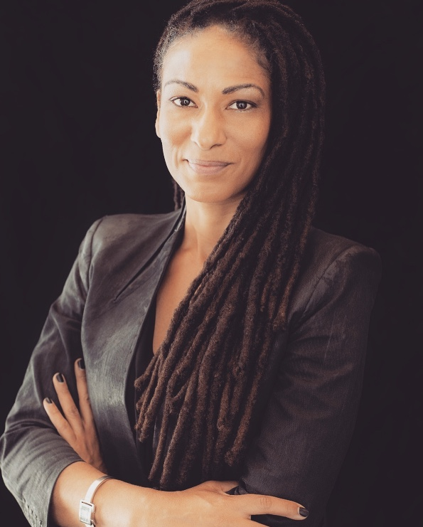

Meet the Students & Teachers of Code Societies 2020
We’re excited to announce the third cohort of Code Societies Winter 2020, a 3-week session, and welcome them into our community.
Read a little bit about each of the students and teachers below. You can meet all of the students in person at our final showcase on January 26th. Stay tuned on Twitter for announcements, or sign up for our newsletter for updates.
Students
Adina Glickstein

Adina Glickstein is a New York-based writer, editor, and filmmaker. The through-line uniting these different spheres in Adina's work is an interest in the relationship between art and labor, which they approach via a variety of both practice and research-led projects including experimental analog filmmaking, academic writing, media archiving, arts criticism, and 35mm photography.
Alonso Castro

I am a designer, artist, technologist and teacher working on concepts that question how society confronts critical problems related to climate change and immigration; and how they all intersect with education, agriculture and the future of food.
Amber Officer-Narvasa

Amber Officer-Narvasa is a Sagittarius, a writer and an artist based in New York. Amber’s words have appeared or are forthcoming in the Columbia Journal of Literary Criticism, Arts.Black, The Brooklyn Rail, Entropy Magazine, The Nation (StudentNation), and Recompiler Mag.
Andreas Jonathan
I'm a writer and current MS. in Library & Information Science candidate based in Brooklyn, NY. I'm broadly interested in speculative fiction, data agency, & constructions of race, gender, territory, embodiment, justice and liberative futures in and around technology.
César Neri
César is a designer playing somewhere at the intersection of architecture, interaction design, and creative development. His personal work is interested in exploring the role of design and technology in the pursuit of decolonizing collective memory and identity in contemporary Latinx culture. Specifically focusing on living Maya cosmologies and ontologies as a way to catalyze resilience and remediation across different communities.
Char Jeré
Char Jeré is an Afro-Fractalist who fights for the liberation of all oppressed people. Char is currently reading and will always be reading these four important books at the same time, in no particular order, Artificial Unintelligence by Meredith Broussard, Race After Technology by Ruha Benjamin, Emergent Strategies: Shaping The Change, Changing The World by Adrienne Maree Brown and This Bridge Called My Back: Writings By Radical Women of Color by Cherrie Moraga(editor) and Gloria Anzaldúa(editor).
Char Stiles

Char Stiles is a multidisciplinary digital artist. Using computational systems and algorithms they are producing pieces that spans disciplines such as video, dance, interactive installation, performance and online works. Though, these days they are thinking about email protocol a lot. Their portfolio is online at www.charstiles.com.
Christina Entcheva

Christina is a SJW software engineer, code mentor, former product manager and designer, internationally exhibited artist, lil baby musician, and salad enthusiast.
Cy X
Cy X is a black queer multidisciplinary artist based in Brooklyn, NY. They are currently a MPS candidate at The Interactive Telecommunications Program, New York University Tisch School of the Arts. Cy is interested in exploring black queer futures and abolitionist possibilities through emerging technology, immersive environments, and performances.
Eliseo Rivera

Eliseo Rivera is an artist, educator, and technologist thinking about how time, memory, heritage, and relationships intersect and shape identity and culture. While working with his students — it’s relationship before content.
Elizabeth Perez
Elizabeth is a connector and guide native to New York City. She is interested in co-existence of humans and technology, and how technology can better support people during transformative life experiences such as pregnancy and birth. Elizabeth studied Sociology at Pomona College and is currently a graduate student at NYU's Interactive Telecommunications Program.
Holly Meadows-Smith
Holly is a person working disjointly in tech and publishing - selling data software by day and making zines by night. As an "artist," her work explores online culture and internet phenomena. Originally from England, she spent many years in the East Bay before ending up in New York in 2017.
Ladipo Famodu
Ladipo Famodu is a researcher, artist, and futurist based in Chicago. He embraces opportunities for experimental learning and believes in the power of imagination. His developing practice Astro Afro Studio seeks to address the present and future threats to social equality and environmental sustainability by weaponizing art, design, and technology in a creative, subversive manner.
Lina Chang
Lina Chang is a phonographer that observes the way information is stored and retained in the form of traces. Working with the process of pulp making and radio wave frequencies – self-recording machines are created in which memory is carved and inscribed.
key words: radio waves, specter, ubiquity, embed, trace, pulp
Mehrnaz Rohbakhsh
Mehrnaz Rohbakhsh is an interdisciplinary artist and educator based between Toronto and Tehran, focusing upon visual art, writing and sound. She holds a BFA from OCAD University in Drawing and Painting, and a MFA from the John H. Daniels Faculty of Architecture, Landscape and Design at the University of Toronto. Rohbakhsh has exhibited her work in Canada, the US, Italy, and Japan.
Shea Fitzpatrick

Shea Fitzpatrick playfully experiments with comics, music, words, and animation to echo indescribable social exchanges and emotional shifts. Shea has written for AIGA Eye on Design and Are.na and works as a user interface designer while cultivating a creative practice in Brooklyn. It sometimes surprises others that Shea has played classical flute for 15 years and drummed in punk bands.
Sophie Kovel

Sophie Kovel is an artist, writer, and translator based in New York. Her work focuses on climate barbarism, psychoanalysis, and imaging trauma. She is an Editorial Assistant at BOMB Magazine and her writing has appeared in Artforum, frieze, the Brooklyn Rail, and elsewhere.
Tina Nguyen
Tina is a digital product designer, and currently lives in Brooklyn. She’s interested in having conversations about identity, psychology, spirituality, and technology. She also likes to hear your perspective on modern working culture, your favorite things to do on the internet, your personal values, and the recent concerts/movies you've seen. ☯️
Teachers
Allison Parrish
Allison Parrish is a computer programmer, poet, educator and game designer whose teaching and practice address the unusual phenomena that blossom when language and computers meet. She teaches at NYU’s Interactive Telecommunications Program.
American Artist
American Artist attended the Whitney Independent Study program as an artist. They are a former resident of Abrons Art Center and EYEBEAM, and a 2018-2019 recipient of the Queens Museum Jerome Foundation Fellowship. They have exhibited at the Museum of African Diaspora, San Francisco; the Studio Museum in Harlem; Museum of Contemporary Art Chicago, and Koenig & Clinton, New York. They have published writing in The New Inquiry and New Criticals and have been featured in The New York Times, Artforum, ARTnews, and Huffington Post. Artist is the art director of the arts and politics publication unbag, lives and works in Brooklyn, NY.
Dan Taeyoung
Dan Taeyoung is a learner, teacher, spatial designer, technologist, and artist, creating design tools, architectural spaces, and social collectives. They are interested in how our environments and relations change the way we think, feel, collaborate, and play together. I teach at Columbia University GSAPP, am a founding member of Soft Surplus (a community space for making and learning near each other), and the Cybernetics Library, an artist-run library focused on socio-technological systems.
emma rae norton (Assistant Organizer)
emma rae norton is an artist working with and through software. Her work, while mostly existing online, has appeared in the form of DAT zines, CD-ROM and collaborative hand coding workshops. Emma is committed to unpacking the ubiquitous networked and computational world that she lives in through a research-based art practice. Her current research focuses on the computer mouse as an impactful technological object — most recently taking the form of writing, the co-organization of a computer mouse conference, and scrolling lectures.
Everest Pipkin
Everest Pipkin is a drawing and software artist from Bee Caves, Texas, who produces intimate work with large data sets. Through the use of online archives, big data repositories, and other resources for digital information, they aim to reclaim the corporate internet as a space that can be gentle, ecological, and personal.
FlucT
FlucT is the collaborative work of Sigrid Lauren & Monica Mirabile addressing issues in the capital obedience of American culture through choreography and performance. Creating original narrative soundscapes linking a manipulated pop music psychosis with violently intimate dance, their composition is a projection driven to expose the psychology of this social paradigm. They founded Otion Front Studio, a performance/dance space in the Bushwick neighborhood of Brooklyn, New York.
Harlo Holmes
Harlo Holmes is the Director of Newsroom Digital Security at Freedom of the Press Foundation. She strives to help individual journalists in various media organizations become confident and effective in securing their communications within their newsrooms, with their sources, and with the public at large.
Kameelah Janan Rasheed
Kameelah Janan Rasheed is an artist and learner who seeks to make her thinking visible through an ecosystem of iterative and provisional projects/processes. This includes sprawling xerox-based “architecturally-scaled collages” (Frieze Magazine, Winter 2018), publications, large-scale text banner installations, digital archives, lecture performances, library interventions, and other forms yet to be determined. Her work has been exhibited at the 2017 Venice Biennale, Institute of Contemporary Art - Philadelphia, Portland Institute of Contemporary Art, Brooklyn Museum, Queens Museum, Bronx Museum, New Museum, Studio Museum in Harlem, Printed Matter, The Kitchen, Jack Shainman Gallery, Schomburg Center for Research in Black Culture, Brooklyn Academy of Music, Project Row Houses, Pinchuk Art Centre, Bétonsalon - Centre d’art et de recherche, and others. Her solo show, Scoring the Stacks at Brooklyn Public Library (Central) invites visitors to wander and explore the library stacks through a series of scores.
Melanie Hoff (Lead Organizer)
Melanie Hoff is an artist and educator examining the role technology plays in social organization and reinforcing hegemonic structures. Their work uncovers coded conventions of norms, interfaces, and sex, through software, installation, and new choreographies of exchange. They are a founding member of Soft Surplus, (a community space for making and learning near each other), the Cybernetics Library (an art and research collective offering resources for study and critique of socio-technological systems) and they teach at the Rhode Island School of Design and SFPC where they will be organizing Code Societies for the third time this winter.
Neta Bomani (Assistant Organizer)
Neta Bomani is a worker who engages in visual storytelling, direct action and anti art practices through organizing and making archives, writings, prints, zines, circuits and workshops. Neta’s work has materialized as an educator of the Pioneer Works collaboration with Good Shepherds after school programs, a steward of the School for Poetic Computation, a member of Stephanie Dinkins Studio and a participator in grassroots organizing against prisons and borders in New York City and beyond in solidarity with No New Jails, Take Back the Bronx and more.
Ruha Benjamin
Ruha Benjamin is Associate Professor of African American Studies at Princeton University, founder of the JUST DATA Lab, and author of Race After Technology: Abolitionist Tools for the New Jim Code (Polity 2019) and editor of Captivating Technology: Reimagining Race, Carceral Technoscience, and Liberatory Imagination in Everyday Life (Duke 2019) among many other publications. Ruha’s work investigates the social dimensions of science, medicine, and technology with a focus on the relationship between innovation and inequity, health and justice, knowledge and power.
Simone Browne
Simone Browne is a professor at the University of Texas at Austin. Her first book, Dark Matters: On the Surveillance of Blackness, examines surveillance with a focus on transatlantic slavery, biometrics, airports and creative texts.
Taeyoon Choi (Session Advisor)
Taeyoon Choi is an artist, writer, and a co-founder of SFPC. He works on accessibile and inclusive art and technology education. He works for disability rights and environmental justice. He collaborates with various artists and engineers on the Distributed Web of Care.